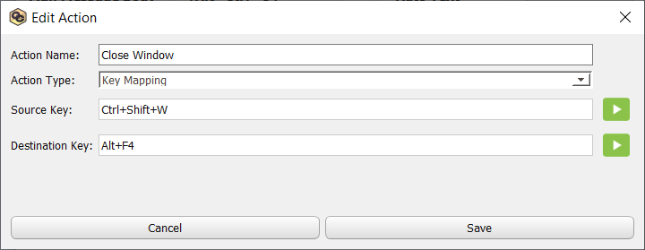
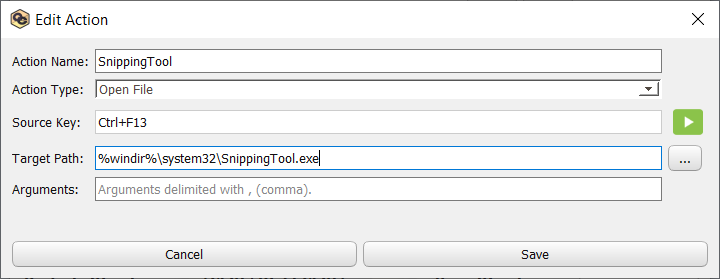
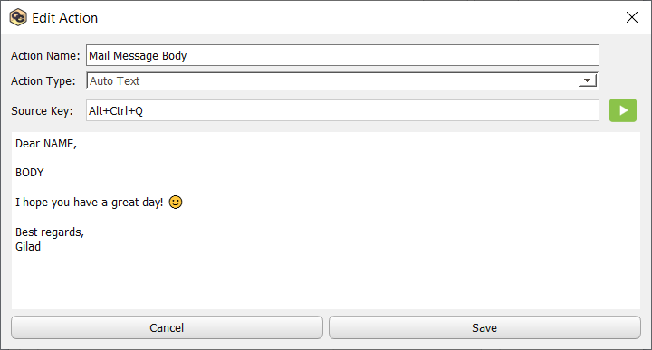
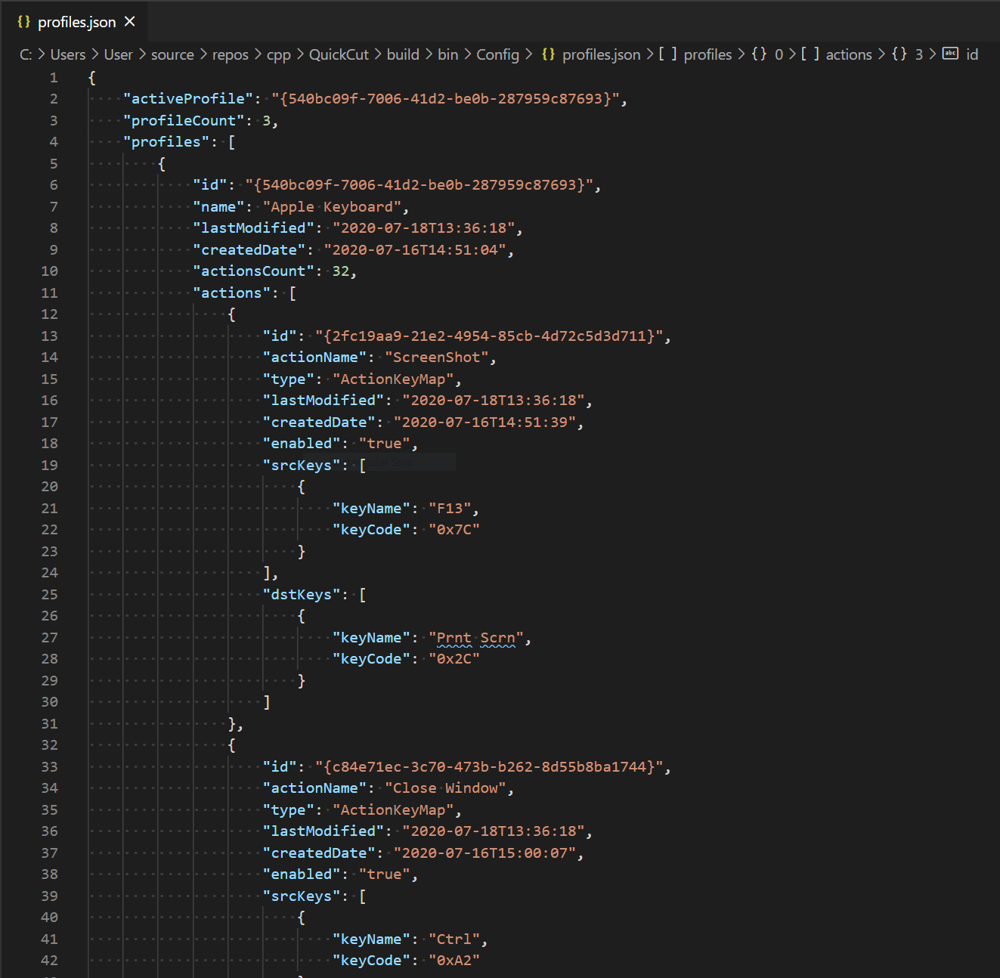
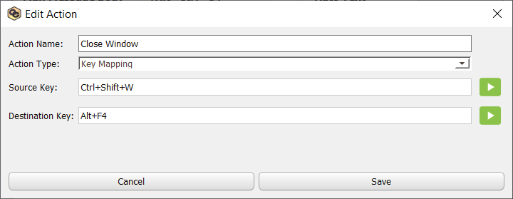
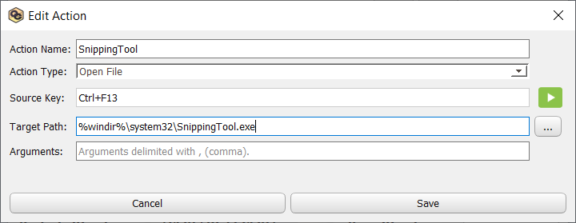
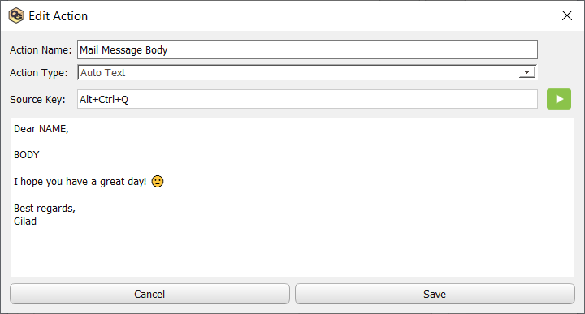
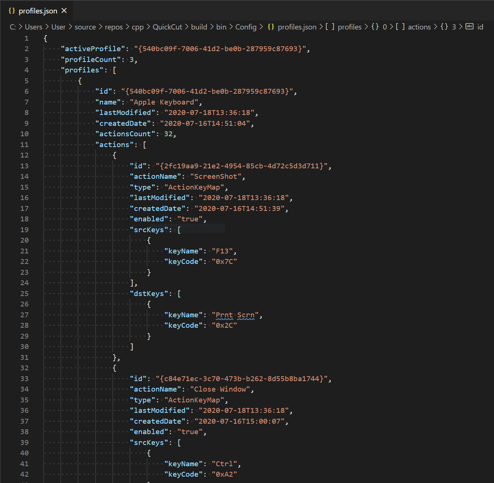

QuickCut will allow you to set any kind of key combination and stay productive as much as possible. It is free to use and open-source, developed using C++ and Qt framework, which what makes it unique and flexible to run on most desktop platforms.
Configuring your keyboard has never been easier using QuickCut's User-Interface. Configure once and forget.
QuickCut runs as a background service and would not affect your computer performance.
A community of developers reviewing and improving the code always helps making QuickCut better.
QuickCut is a process-driven application and there is no need to modify your system configuration in order to get things to work. You can create multiple Profiles and each Profile contains multiple Actions in a one-to-many relationship. This gives the ability to easily switch between different profiles to activate different keyboard shortcuts. There are three main components that are responsible for making this all possible:
Is where you interact with QuickCut to create your Profiles and Actions. Rest of things are just running in the background.
Where all the magic happens. Regulating all your inputs based on your created Actions of the currently active Profile.
Every N time, this component checks to see whether QuickCutConsole is running, making sure your created Actions are active at all time.
You can make a keyboard's key to work like a different key. i.e. Ctrl mapped to Caps-Lock. Note that your source key (the specified key to trigger the destination key) will be disabled in order to simulate the key mapping. No need to restart your computer.
It is possible to map multiple keys to trigger different keys. This will not disable the source keys as the regular key mapping does. i.e. Ctrl+Shift+W mapped to Alt+F4.
QuickCut support Unicode characters, meaning you can write in any language you like (큰 - מעולה - عظيم). This is particularly useful for the Auto Text feature and also adding emojis to your text.
Do you have to write many mails during your day? This is for you! It is possible to configure a template body text to be pasted with a shortcut. This is very useful when you have multiple templates for your common messages.
All your created Profiles & Actions are saved in a nicely formatted JSON file under ./Config/profiles.json. You can easily share this with your co-workers or friends.
You can create multiple Profiles that contains different Actions. When you set a specific Profile as default, only the Profile's Actions will be activated. When using multiple keyboards (i.e. laptop that is connected to a monitor) that has different keyboard layouts, it is very easy to switch between your created Profiles.
One of QuickCut's most useful features, is when you need to launch some of your favorite programs or files that you often need to open. You can easily specify a shortcut to launch them for you. It is also great for developers to launch specific scripts for setting development environment.
Do you have a complex directory structure for a project you are currently working on? This is exactly for you. Specify the path and the shortcut and save yourself the time of getting there.
QuickCut uses CSS like stylesheet that you can customly create or use existing ones.
 







Also make sure to check out the GitHub page for detailed change-logs.
For any feedback, feature-requests or issues, please make sure to report in order to improve QuickCut.
You can contact me via email or open an issue on the GitHub-Issue-Tracker.